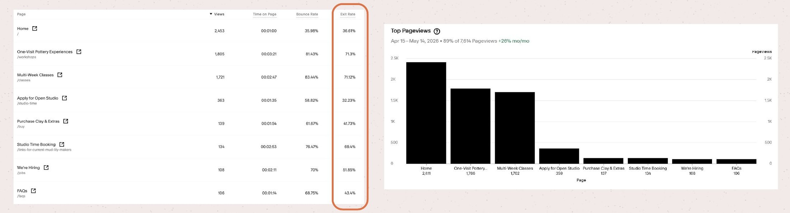
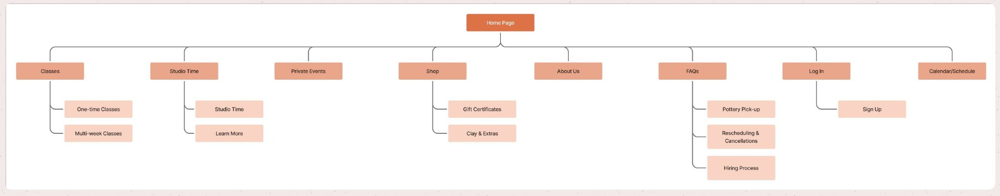
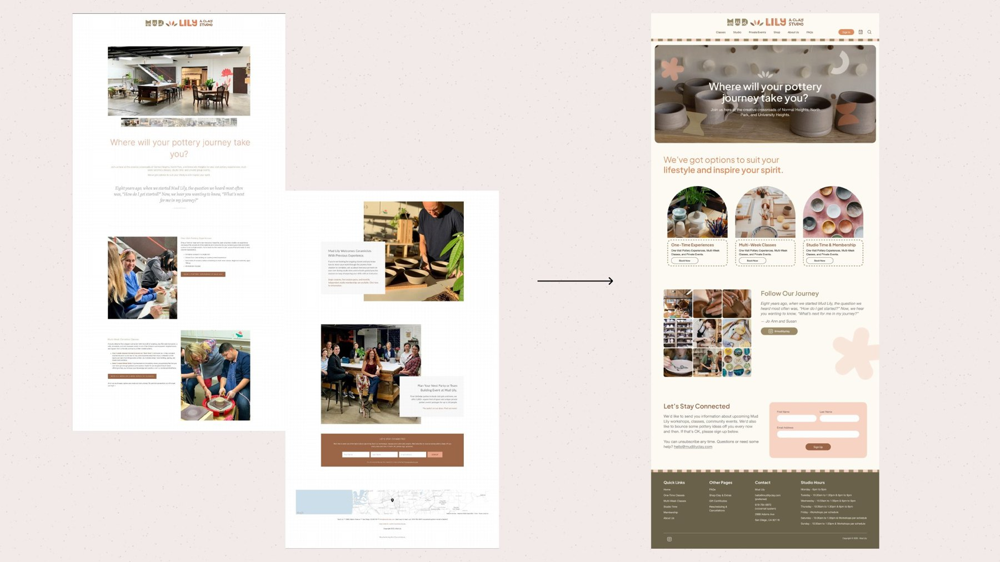

Mud Lily Clay: analytics, site structure, and copy.
Mud Lily Clay is a small-business pottery studio in San Diego. Its website overwhelmed potential customers with fragmented, redundant content and inconsistent navigation. High-intent visitors dropped off before converting, and the studio had no analytics to show where or why.
→Interviewed the owner and split the audience into one-time experiencers and structured learners, with a dedicated path for each.
→Benchmarked local and national pottery studio sites (PotteryDen, Color Me Mine, Clayat) and rebuilt the homepage around three clear offers, each with one Book Now action.
→Used a Google Analytics baseline to find the leak: class pages lost about 7 in 10 visitors, so I fixed how people find the right class before the booking step.
→Worked within Squarespace and Acuity limits, with 3 designers and 2 developers.

Squarespace analytics baseline. The One-Visit Experiences and Multi-Week Classes pages drew 1,805 and 1,721 views, with 71.3% and 71.12% exit rates and 81.43% and 83.44% bounce, against a 36.61% exit rate on the homepage.

After: pages consolidated into a folder hierarchy with 5 relevant nav bar links (classes, events, shop, FAQ). Before, there were countless pages with overlapping content and no clear hierarchy.

Homepage before and after: from a long, text-heavy scroll to a scannable entry point with three offer cards and a clear route to booking.
→Consolidated overlapping pages into a clean folder hierarchy, giving each class type one clear page: the base that search engines and visitors both need.
→Planned a post-launch review of traffic, keyword rankings, and analytics.
→Ran two rounds of usability testing.
→Consolidated class pages cut time-to-booking by an estimated 60%, measured by task completion time in testing.
→Implemented the final design in the live Squarespace site